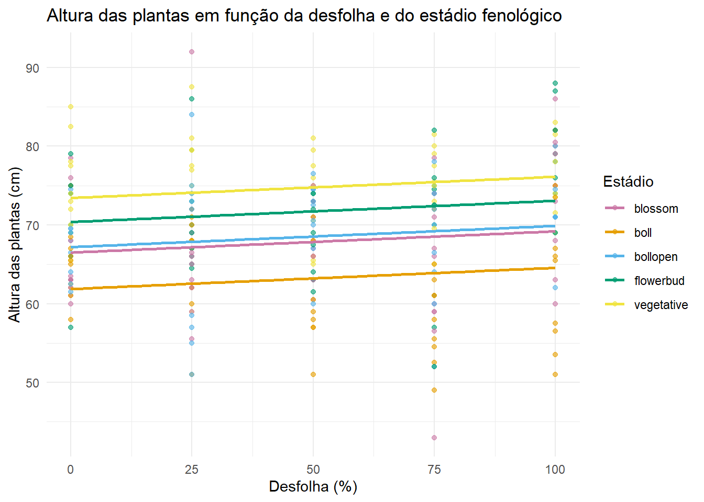
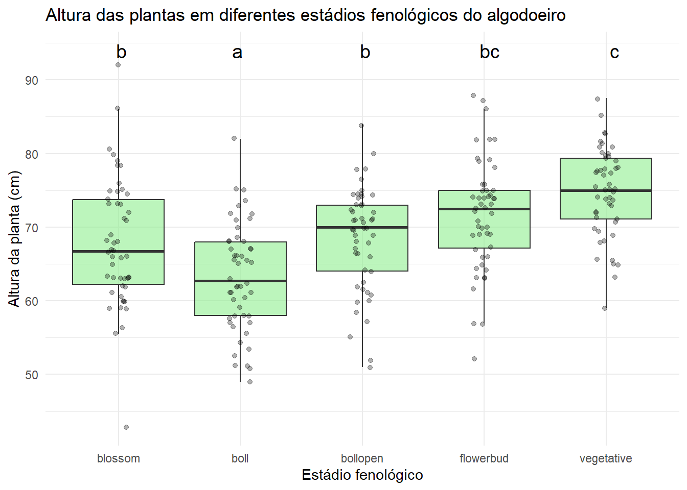
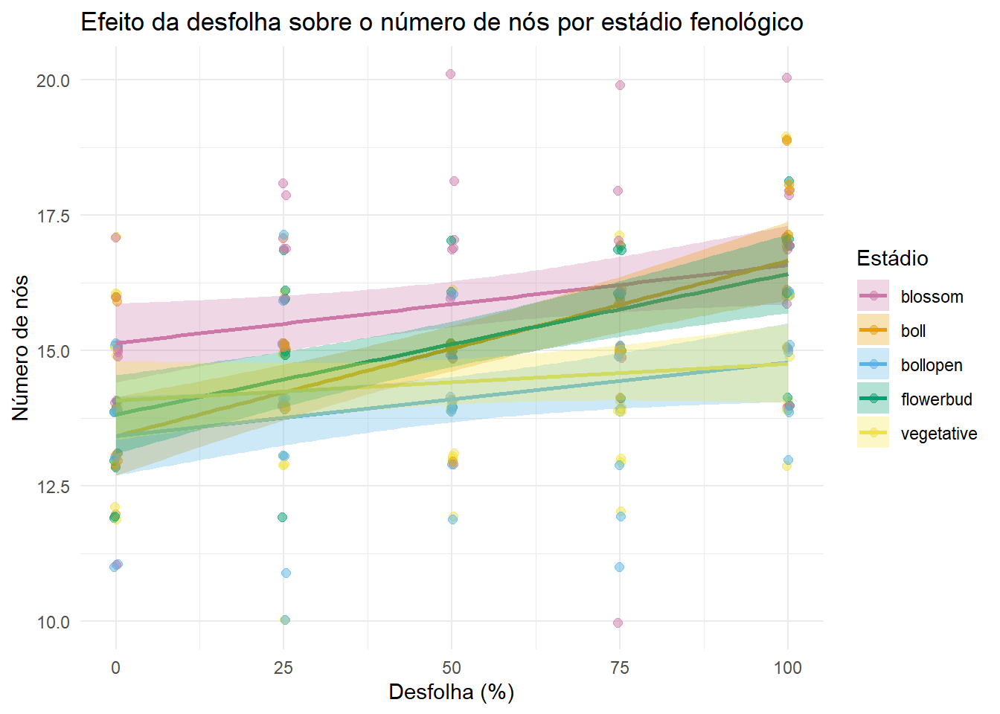

library(janitor)
library(car) # para teste de Levene
library(emmeans) # para pós-hoc
library(multcompView) # para compact letter display no pós-hoc
library(multcomp)
library(agricolae)
library(tidyr)
library(agridat)
library(ggplot2)
library(dplyr)Análises inferênciais dos dados do experimento
Pacotes usados
Análises inferênciais
Peso dos capulhos (weight)
data(silva.cotton)
dat <- silva.cotton
# Remover NAs (apenas na variável weigth)
dados_anova_weight <- dat |> tidyr::drop_na(weight)
dados_anova_weight$defoliation <- as.factor(dados_anova_weight$defoliation)
# ANOVA bifatorial (modelo aditivo com interação)
modelo_weight <- aov(weight ~ stage * defoliation, data = dados_anova_weight)
# Sumário da ANOVA
summary(modelo_weight) Df Sum Sq Mean Sq F value Pr(>F)
stage 4 1467.4 366.8 29.503 3.34e-16 ***
defoliation 4 2287.2 571.8 45.987 < 2e-16 ***
stage:defoliation 16 789.6 49.3 3.969 9.37e-06 ***
Residuals 100 1243.4 12.4
---
Signif. codes: 0 '***' 0.001 '**' 0.01 '*' 0.05 '.' 0.1 ' ' 1# Verificação de pressupostos
# 1. Normalidade dos resíduos
# p > 0.05 = resíduos normais
shapiro.test(residuals(modelo_weight))
Shapiro-Wilk normality test
data: residuals(modelo_weight)
W = 0.9925, p-value = 0.7434# 2. Homogeneidade de variâncias (Levene)
# p > 0.05 = variâncias homogêneas
leveneTest(weight ~ stage * defoliation, data = dados_anova_weight)Levene's Test for Homogeneity of Variance (center = median)
Df F value Pr(>F)
group 24 0.7113 0.8294
100 #a interação foi significativa, os dados seguiram normalidade e atenderam ao pressuposto de homogeneidade, seguimos então com o teste Tukey de médias.
#Pós-hoc: teste de Tukey para defoliation (significativo)
#decompões as médias de cada estádio dentro de desfolha
#mostrar as diferenças estatísticas para letras na coluna (maiusculas).
media_stage <- emmeans(modelo_weight, ~ stage | defoliation)
media_stagedefoliation = 0:
stage emmean SE df lower.CL upper.CL
blossom 28.75 1.58 100 25.6 31.88
boll 28.98 1.58 100 25.9 32.11
bollopen 34.18 1.58 100 31.1 37.31
flowerbud 29.14 1.58 100 26.0 32.26
vegetative 31.73 1.58 100 28.6 34.86
defoliation = 25:
stage emmean SE df lower.CL upper.CL
blossom 21.13 1.58 100 18.0 24.26
boll 26.52 1.58 100 23.4 29.65
bollopen 31.13 1.58 100 28.0 34.25
flowerbud 28.86 1.58 100 25.7 31.99
vegetative 31.74 1.58 100 28.6 34.87
defoliation = 50:
stage emmean SE df lower.CL upper.CL
blossom 20.70 1.58 100 17.6 23.83
boll 28.72 1.58 100 25.6 31.85
bollopen 28.45 1.58 100 25.3 31.58
flowerbud 29.57 1.58 100 26.4 32.70
vegetative 28.94 1.58 100 25.8 32.07
defoliation = 75:
stage emmean SE df lower.CL upper.CL
blossom 20.27 1.58 100 17.1 23.39
boll 21.93 1.58 100 18.8 25.06
bollopen 28.55 1.58 100 25.4 31.68
flowerbud 26.57 1.58 100 23.4 29.70
vegetative 29.02 1.58 100 25.9 32.15
defoliation = 100:
stage emmean SE df lower.CL upper.CL
blossom 13.41 1.58 100 10.3 16.54
boll 6.73 1.58 100 3.6 9.86
bollopen 25.35 1.58 100 22.2 28.48
flowerbud 23.24 1.58 100 20.1 26.37
vegetative 20.88 1.58 100 17.7 24.01
Confidence level used: 0.95 cld(media_stage, Letters = letters)defoliation = 0:
stage emmean SE df lower.CL upper.CL .group
blossom 28.75 1.58 100 25.6 31.88 a
boll 28.98 1.58 100 25.9 32.11 a
flowerbud 29.14 1.58 100 26.0 32.26 a
vegetative 31.73 1.58 100 28.6 34.86 a
bollopen 34.18 1.58 100 31.1 37.31 a
defoliation = 25:
stage emmean SE df lower.CL upper.CL .group
blossom 21.13 1.58 100 18.0 24.26 a
boll 26.52 1.58 100 23.4 29.65 ab
flowerbud 28.86 1.58 100 25.7 31.99 b
bollopen 31.13 1.58 100 28.0 34.25 b
vegetative 31.74 1.58 100 28.6 34.87 b
defoliation = 50:
stage emmean SE df lower.CL upper.CL .group
blossom 20.70 1.58 100 17.6 23.83 a
bollopen 28.45 1.58 100 25.3 31.58 b
boll 28.72 1.58 100 25.6 31.85 b
vegetative 28.94 1.58 100 25.8 32.07 b
flowerbud 29.57 1.58 100 26.4 32.70 b
defoliation = 75:
stage emmean SE df lower.CL upper.CL .group
blossom 20.27 1.58 100 17.1 23.39 a
boll 21.93 1.58 100 18.8 25.06 ab
flowerbud 26.57 1.58 100 23.4 29.70 bc
bollopen 28.55 1.58 100 25.4 31.68 c
vegetative 29.02 1.58 100 25.9 32.15 c
defoliation = 100:
stage emmean SE df lower.CL upper.CL .group
boll 6.73 1.58 100 3.6 9.86 a
blossom 13.41 1.58 100 10.3 16.54 b
vegetative 20.88 1.58 100 17.7 24.01 c
flowerbud 23.24 1.58 100 20.1 26.37 c
bollopen 25.35 1.58 100 22.2 28.48 c
Confidence level used: 0.95
P value adjustment: tukey method for comparing a family of 5 estimates
significance level used: alpha = 0.05
NOTE: If two or more means share the same grouping symbol,
then we cannot show them to be different.
But we also did not show them to be the same. #Pós-hoc: teste de Tukey para stage (significativo)
#decompões as médias de cada nivel de desfolha dentro dos estádios
#mostrar as diferenças estatísticas para letras na linha (minusculas).
media_defoliation <- emmeans(modelo_weight, ~ defoliation | stage)
media_defoliationstage = blossom:
defoliation emmean SE df lower.CL upper.CL
0 28.75 1.58 100 25.6 31.88
25 21.13 1.58 100 18.0 24.26
50 20.70 1.58 100 17.6 23.83
75 20.27 1.58 100 17.1 23.39
100 13.41 1.58 100 10.3 16.54
stage = boll:
defoliation emmean SE df lower.CL upper.CL
0 28.98 1.58 100 25.9 32.11
25 26.52 1.58 100 23.4 29.65
50 28.72 1.58 100 25.6 31.85
75 21.93 1.58 100 18.8 25.06
100 6.73 1.58 100 3.6 9.86
stage = bollopen:
defoliation emmean SE df lower.CL upper.CL
0 34.18 1.58 100 31.1 37.31
25 31.13 1.58 100 28.0 34.25
50 28.45 1.58 100 25.3 31.58
75 28.55 1.58 100 25.4 31.68
100 25.35 1.58 100 22.2 28.48
stage = flowerbud:
defoliation emmean SE df lower.CL upper.CL
0 29.14 1.58 100 26.0 32.26
25 28.86 1.58 100 25.7 31.99
50 29.57 1.58 100 26.4 32.70
75 26.57 1.58 100 23.4 29.70
100 23.24 1.58 100 20.1 26.37
stage = vegetative:
defoliation emmean SE df lower.CL upper.CL
0 31.73 1.58 100 28.6 34.86
25 31.74 1.58 100 28.6 34.87
50 28.94 1.58 100 25.8 32.07
75 29.02 1.58 100 25.9 32.15
100 20.88 1.58 100 17.7 24.01
Confidence level used: 0.95 cld(media_defoliation, Letters = letters)stage = blossom:
defoliation emmean SE df lower.CL upper.CL .group
100 13.41 1.58 100 10.3 16.54 a
75 20.27 1.58 100 17.1 23.39 b
50 20.70 1.58 100 17.6 23.83 b
25 21.13 1.58 100 18.0 24.26 b
0 28.75 1.58 100 25.6 31.88 c
stage = boll:
defoliation emmean SE df lower.CL upper.CL .group
100 6.73 1.58 100 3.6 9.86 a
75 21.93 1.58 100 18.8 25.06 b
25 26.52 1.58 100 23.4 29.65 bc
50 28.72 1.58 100 25.6 31.85 c
0 28.98 1.58 100 25.9 32.11 c
stage = bollopen:
defoliation emmean SE df lower.CL upper.CL .group
100 25.35 1.58 100 22.2 28.48 a
50 28.45 1.58 100 25.3 31.58 ab
75 28.55 1.58 100 25.4 31.68 ab
25 31.13 1.58 100 28.0 34.25 ab
0 34.18 1.58 100 31.1 37.31 b
stage = flowerbud:
defoliation emmean SE df lower.CL upper.CL .group
100 23.24 1.58 100 20.1 26.37 a
75 26.57 1.58 100 23.4 29.70 ab
25 28.86 1.58 100 25.7 31.99 ab
0 29.14 1.58 100 26.0 32.26 ab
50 29.57 1.58 100 26.4 32.70 b
stage = vegetative:
defoliation emmean SE df lower.CL upper.CL .group
100 20.88 1.58 100 17.7 24.01 a
50 28.94 1.58 100 25.8 32.07 b
75 29.02 1.58 100 25.9 32.15 b
0 31.73 1.58 100 28.6 34.86 b
25 31.74 1.58 100 28.6 34.87 b
Confidence level used: 0.95
P value adjustment: tukey method for comparing a family of 5 estimates
significance level used: alpha = 0.05
NOTE: If two or more means share the same grouping symbol,
then we cannot show them to be different.
But we also did not show them to be the same. #para o CV (coeficiente de variação do modelo) da tabela
cv.model(modelo_weight)[1] 13.67816Tabela 1 - Resultado do teste de Tukey
| Estádio | 0 | 25 | 50 | 75 | 100 |
|---|---|---|---|---|---|
| Floração | 28,75 Ac | 21,13 Ab | 20,70 Ab | 20,27 Ab | 13,41 Aa |
| Capulho | 28,98 Ac | 26,52 ABc | 28,72 Bbc | 21,93 ABb | 6,73 Ba |
| Maçãs | 34,18 Ab | 31,13 Bab | 28,45 Bab | 28,55 BCab | 25,35 Ca |
| Botão floral | 29,14 Ab | 28,86 Bab | 29,57 Bab | 26,57 Cab | 23,24 Ca |
| Vegetativo | 31,73 Ab | 31,74 Bb | 28,94 Bb | 29,02 Cb | 20,88 Ca |
CV = 13,67
Médias seguidas pela mesma letra maiúscula na coluna, e minúscula na linha, não diferem estatisticamente entre si pelo teste de Tukey a 5% de probabilidade.
Número de capulhos viáveis (variável “reproductive”)
# ANOVA bifatorial (modelo aditivo com interação)
dat$defoliation <- as.factor(dat$defoliation)
modelo_reproductive <- aov(reproductive ~ stage * defoliation, data = dat)
# Sumário da ANOVA
summary(modelo_reproductive) Df Sum Sq Mean Sq F value Pr(>F)
stage 4 38.98 9.746 9.842 2.35e-07 ***
defoliation 4 38.66 9.666 9.761 2.68e-07 ***
stage:defoliation 16 28.42 1.776 1.794 0.0331 *
Residuals 225 222.80 0.990
---
Signif. codes: 0 '***' 0.001 '**' 0.01 '*' 0.05 '.' 0.1 ' ' 1# Verificação de pressupostos
# 1. Normalidade dos resíduos
# p > 0.05 = resíduos normais
shapiro.test(residuals(modelo_reproductive))
Shapiro-Wilk normality test
data: residuals(modelo_reproductive)
W = 0.98262, p-value = 0.003781# 2. Homogeneidade de variâncias (Levene)
# p > 0.05 = variâncias homogêneas
leveneTest(reproductive ~ stage * defoliation, data = dat)Levene's Test for Homogeneity of Variance (center = median)
Df F value Pr(>F)
group 24 1.2447 0.2057
225 #a interação foi siguinificativa, os dados não seguiram normalidade, mas atenderam ao pressuposto de homogeneidade, seguimos então com o teste Tukey.
#Pós-hoc: teste de Tukey para defoliation (significativo)
#decompões as médias de cada estádio dentro de desfolha
#mostrar as diferenças estatísticas para letras na coluna (maiusculas).
media_reproductive <- emmeans(modelo_reproductive, ~ stage | defoliation)
media_reproductivedefoliation = 0:
stage emmean SE df lower.CL upper.CL
blossom 4.8 0.315 225 4.18 5.42
boll 4.3 0.315 225 3.68 4.92
bollopen 5.0 0.315 225 4.38 5.62
flowerbud 4.2 0.315 225 3.58 4.82
vegetative 4.6 0.315 225 3.98 5.22
defoliation = 25:
stage emmean SE df lower.CL upper.CL
blossom 3.4 0.315 225 2.78 4.02
boll 3.8 0.315 225 3.18 4.42
bollopen 5.0 0.315 225 4.38 5.62
flowerbud 4.7 0.315 225 4.08 5.32
vegetative 5.1 0.315 225 4.48 5.72
defoliation = 50:
stage emmean SE df lower.CL upper.CL
blossom 3.5 0.315 225 2.88 4.12
boll 4.3 0.315 225 3.68 4.92
bollopen 4.2 0.315 225 3.58 4.82
flowerbud 4.5 0.315 225 3.88 5.12
vegetative 4.3 0.315 225 3.68 4.92
defoliation = 75:
stage emmean SE df lower.CL upper.CL
blossom 3.4 0.315 225 2.78 4.02
boll 3.4 0.315 225 2.78 4.02
bollopen 4.4 0.315 225 3.78 5.02
flowerbud 4.5 0.315 225 3.88 5.12
vegetative 4.2 0.315 225 3.58 4.82
defoliation = 100:
stage emmean SE df lower.CL upper.CL
blossom 2.9 0.315 225 2.28 3.52
boll 2.7 0.315 225 2.08 3.32
bollopen 4.5 0.315 225 3.88 5.12
flowerbud 3.9 0.315 225 3.28 4.52
vegetative 3.2 0.315 225 2.58 3.82
Confidence level used: 0.95 cld(media_reproductive, Letters = letters)defoliation = 0:
stage emmean SE df lower.CL upper.CL .group
flowerbud 4.2 0.315 225 3.58 4.82 a
boll 4.3 0.315 225 3.68 4.92 a
vegetative 4.6 0.315 225 3.98 5.22 a
blossom 4.8 0.315 225 4.18 5.42 a
bollopen 5.0 0.315 225 4.38 5.62 a
defoliation = 25:
stage emmean SE df lower.CL upper.CL .group
blossom 3.4 0.315 225 2.78 4.02 a
boll 3.8 0.315 225 3.18 4.42 ab
flowerbud 4.7 0.315 225 4.08 5.32 bc
bollopen 5.0 0.315 225 4.38 5.62 bc
vegetative 5.1 0.315 225 4.48 5.72 c
defoliation = 50:
stage emmean SE df lower.CL upper.CL .group
blossom 3.5 0.315 225 2.88 4.12 a
bollopen 4.2 0.315 225 3.58 4.82 a
vegetative 4.3 0.315 225 3.68 4.92 a
boll 4.3 0.315 225 3.68 4.92 a
flowerbud 4.5 0.315 225 3.88 5.12 a
defoliation = 75:
stage emmean SE df lower.CL upper.CL .group
blossom 3.4 0.315 225 2.78 4.02 a
boll 3.4 0.315 225 2.78 4.02 a
vegetative 4.2 0.315 225 3.58 4.82 a
bollopen 4.4 0.315 225 3.78 5.02 a
flowerbud 4.5 0.315 225 3.88 5.12 a
defoliation = 100:
stage emmean SE df lower.CL upper.CL .group
boll 2.7 0.315 225 2.08 3.32 a
blossom 2.9 0.315 225 2.28 3.52 a
vegetative 3.2 0.315 225 2.58 3.82 a
flowerbud 3.9 0.315 225 3.28 4.52 ab
bollopen 4.5 0.315 225 3.88 5.12 b
Confidence level used: 0.95
P value adjustment: tukey method for comparing a family of 5 estimates
significance level used: alpha = 0.05
NOTE: If two or more means share the same grouping symbol,
then we cannot show them to be different.
But we also did not show them to be the same. #Pós-hoc: teste de Tukey para stage (significativo)
#decompões as médias de cada nivel de desfolha dentro dos estádios
#mostrar as diferenças estatísticas para letras na linha (minusculas).
media_defoliation <- emmeans(modelo_reproductive, ~ defoliation | stage)
media_defoliationstage = blossom:
defoliation emmean SE df lower.CL upper.CL
0 4.8 0.315 225 4.18 5.42
25 3.4 0.315 225 2.78 4.02
50 3.5 0.315 225 2.88 4.12
75 3.4 0.315 225 2.78 4.02
100 2.9 0.315 225 2.28 3.52
stage = boll:
defoliation emmean SE df lower.CL upper.CL
0 4.3 0.315 225 3.68 4.92
25 3.8 0.315 225 3.18 4.42
50 4.3 0.315 225 3.68 4.92
75 3.4 0.315 225 2.78 4.02
100 2.7 0.315 225 2.08 3.32
stage = bollopen:
defoliation emmean SE df lower.CL upper.CL
0 5.0 0.315 225 4.38 5.62
25 5.0 0.315 225 4.38 5.62
50 4.2 0.315 225 3.58 4.82
75 4.4 0.315 225 3.78 5.02
100 4.5 0.315 225 3.88 5.12
stage = flowerbud:
defoliation emmean SE df lower.CL upper.CL
0 4.2 0.315 225 3.58 4.82
25 4.7 0.315 225 4.08 5.32
50 4.5 0.315 225 3.88 5.12
75 4.5 0.315 225 3.88 5.12
100 3.9 0.315 225 3.28 4.52
stage = vegetative:
defoliation emmean SE df lower.CL upper.CL
0 4.6 0.315 225 3.98 5.22
25 5.1 0.315 225 4.48 5.72
50 4.3 0.315 225 3.68 4.92
75 4.2 0.315 225 3.58 4.82
100 3.2 0.315 225 2.58 3.82
Confidence level used: 0.95 cld(media_defoliation, Letters = letters)stage = blossom:
defoliation emmean SE df lower.CL upper.CL .group
100 2.9 0.315 225 2.28 3.52 a
75 3.4 0.315 225 2.78 4.02 a
25 3.4 0.315 225 2.78 4.02 a
50 3.5 0.315 225 2.88 4.12 a
0 4.8 0.315 225 4.18 5.42 b
stage = boll:
defoliation emmean SE df lower.CL upper.CL .group
100 2.7 0.315 225 2.08 3.32 a
75 3.4 0.315 225 2.78 4.02 ab
25 3.8 0.315 225 3.18 4.42 ab
50 4.3 0.315 225 3.68 4.92 b
0 4.3 0.315 225 3.68 4.92 b
stage = bollopen:
defoliation emmean SE df lower.CL upper.CL .group
50 4.2 0.315 225 3.58 4.82 a
75 4.4 0.315 225 3.78 5.02 a
100 4.5 0.315 225 3.88 5.12 a
0 5.0 0.315 225 4.38 5.62 a
25 5.0 0.315 225 4.38 5.62 a
stage = flowerbud:
defoliation emmean SE df lower.CL upper.CL .group
100 3.9 0.315 225 3.28 4.52 a
0 4.2 0.315 225 3.58 4.82 a
75 4.5 0.315 225 3.88 5.12 a
50 4.5 0.315 225 3.88 5.12 a
25 4.7 0.315 225 4.08 5.32 a
stage = vegetative:
defoliation emmean SE df lower.CL upper.CL .group
100 3.2 0.315 225 2.58 3.82 a
75 4.2 0.315 225 3.58 4.82 ab
50 4.3 0.315 225 3.68 4.92 ab
0 4.6 0.315 225 3.98 5.22 b
25 5.1 0.315 225 4.48 5.72 b
Confidence level used: 0.95
P value adjustment: tukey method for comparing a family of 5 estimates
significance level used: alpha = 0.05
NOTE: If two or more means share the same grouping symbol,
then we cannot show them to be different.
But we also did not show them to be the same. #para o CV (coeficiente de variação do modelo) da tabela
cv.model(modelo_reproductive)[1] 24.19988Tabela 2 - Resultado do teste de Tukey
| Estádio | 0 | 25 | 50 | 75 | 100 |
|---|---|---|---|---|---|
| floração | 4,8 Ab | 3,4 Aa | 3,5 Aa | 3,4 Aa | 2,9 Aa |
| capulho | 4,3 Ab | 3,8 ABb | 4,3 Aab | 3,4 Aab | 2,7 Aa |
| maçãs | 5,0 Aa | 5,0 BCa | 4,2 Aa | 4,2 Aa | 4,5 Ba |
| botão floral | 4,2 Aa | 4,7 BCa | 4,5 Aa | 4,4 Aa | 3,9 ABa |
| vegetativo | 4,6 Ab | 5,1 Cb | 4,3 Aab | 4,5 Aab | 3,2 Aa |
CV = 24,19
Médias seguidas pela mesma letra maiúscula na coluna, e minúscula na linha, não diferem estatisticamente entre si pelo teste de Tukey a 5% de probabilidade.
Número de capulhos (Variável “bolls”)
modelo_bolls <- aov(bolls ~ stage * defoliation, data = dat)
summary(modelo_bolls) Df Sum Sq Mean Sq F value Pr(>F)
stage 4 76.82 19.206 19.768 5.84e-14 ***
defoliation 4 67.50 16.876 17.370 1.96e-12 ***
stage:defoliation 16 53.14 3.321 3.418 1.95e-05 ***
Residuals 225 218.60 0.972
---
Signif. codes: 0 '***' 0.001 '**' 0.01 '*' 0.05 '.' 0.1 ' ' 1shapiro.test(residuals(modelo_bolls))
Shapiro-Wilk normality test
data: residuals(modelo_bolls)
W = 0.98485, p-value = 0.009351leveneTest(bolls ~ stage * defoliation, data = dat) Levene's Test for Homogeneity of Variance (center = median)
Df F value Pr(>F)
group 24 1.3096 0.1587
225 #a interação foi siguinificativa, os dados não seguiram normalidade, mas atenderam ao pressuposto de homogeneidade, seguimos então com o teste Tukey.
#Pós-hoc: teste de Tukey para defoliation (significativo)
#decompõe as médias de cada estádio dentro de desfolha
#mostrar as diferenças estatísticas para letras na coluna (maiusculas).
media_bolls <- emmeans(modelo_bolls, ~ stage | defoliation)
media_bolls defoliation = 0:
stage emmean SE df lower.CL upper.CL
blossom 4.7 0.312 225 4.086 5.31
boll 4.3 0.312 225 3.686 4.91
bollopen 5.0 0.312 225 4.386 5.61
flowerbud 4.2 0.312 225 3.586 4.81
vegetative 4.5 0.312 225 3.886 5.11
defoliation = 25:
stage emmean SE df lower.CL upper.CL
blossom 2.9 0.312 225 2.286 3.51
boll 3.5 0.312 225 2.886 4.11
bollopen 5.0 0.312 225 4.386 5.61
flowerbud 4.7 0.312 225 4.086 5.31
vegetative 5.0 0.312 225 4.386 5.61
defoliation = 50:
stage emmean SE df lower.CL upper.CL
blossom 2.9 0.312 225 2.286 3.51
boll 4.4 0.312 225 3.786 5.01
bollopen 4.1 0.312 225 3.486 4.71
flowerbud 4.4 0.312 225 3.786 5.01
vegetative 4.3 0.312 225 3.686 4.91
defoliation = 75:
stage emmean SE df lower.CL upper.CL
blossom 3.0 0.312 225 2.386 3.61
boll 3.1 0.312 225 2.486 3.71
bollopen 4.4 0.312 225 3.786 5.01
flowerbud 4.4 0.312 225 3.786 5.01
vegetative 4.0 0.312 225 3.386 4.61
defoliation = 100:
stage emmean SE df lower.CL upper.CL
blossom 2.3 0.312 225 1.686 2.91
boll 1.5 0.312 225 0.886 2.11
bollopen 4.5 0.312 225 3.886 5.11
flowerbud 3.6 0.312 225 2.986 4.21
vegetative 3.1 0.312 225 2.486 3.71
Confidence level used: 0.95 cld(media_bolls, Letters = letters)defoliation = 0:
stage emmean SE df lower.CL upper.CL .group
flowerbud 4.2 0.312 225 3.586 4.81 a
boll 4.3 0.312 225 3.686 4.91 a
vegetative 4.5 0.312 225 3.886 5.11 a
blossom 4.7 0.312 225 4.086 5.31 a
bollopen 5.0 0.312 225 4.386 5.61 a
defoliation = 25:
stage emmean SE df lower.CL upper.CL .group
blossom 2.9 0.312 225 2.286 3.51 a
boll 3.5 0.312 225 2.886 4.11 ab
flowerbud 4.7 0.312 225 4.086 5.31 bc
bollopen 5.0 0.312 225 4.386 5.61 c
vegetative 5.0 0.312 225 4.386 5.61 c
defoliation = 50:
stage emmean SE df lower.CL upper.CL .group
blossom 2.9 0.312 225 2.286 3.51 a
bollopen 4.1 0.312 225 3.486 4.71 ab
vegetative 4.3 0.312 225 3.686 4.91 b
boll 4.4 0.312 225 3.786 5.01 b
flowerbud 4.4 0.312 225 3.786 5.01 b
defoliation = 75:
stage emmean SE df lower.CL upper.CL .group
blossom 3.0 0.312 225 2.386 3.61 a
boll 3.1 0.312 225 2.486 3.71 a
vegetative 4.0 0.312 225 3.386 4.61 ab
flowerbud 4.4 0.312 225 3.786 5.01 b
bollopen 4.4 0.312 225 3.786 5.01 b
defoliation = 100:
stage emmean SE df lower.CL upper.CL .group
boll 1.5 0.312 225 0.886 2.11 a
blossom 2.3 0.312 225 1.686 2.91 ab
vegetative 3.1 0.312 225 2.486 3.71 bc
flowerbud 3.6 0.312 225 2.986 4.21 cd
bollopen 4.5 0.312 225 3.886 5.11 d
Confidence level used: 0.95
P value adjustment: tukey method for comparing a family of 5 estimates
significance level used: alpha = 0.05
NOTE: If two or more means share the same grouping symbol,
then we cannot show them to be different.
But we also did not show them to be the same. #Pós-hoc: teste de Tukey para stage (significativo)
#decompões as médias de cada nivel de desfolha dentro dos estádios
#mostrar as diferenças estatísticas para letras na linha (minusculas).
media_defoliation <- emmeans(modelo_bolls, ~ defoliation | stage)
media_defoliationstage = blossom:
defoliation emmean SE df lower.CL upper.CL
0 4.7 0.312 225 4.086 5.31
25 2.9 0.312 225 2.286 3.51
50 2.9 0.312 225 2.286 3.51
75 3.0 0.312 225 2.386 3.61
100 2.3 0.312 225 1.686 2.91
stage = boll:
defoliation emmean SE df lower.CL upper.CL
0 4.3 0.312 225 3.686 4.91
25 3.5 0.312 225 2.886 4.11
50 4.4 0.312 225 3.786 5.01
75 3.1 0.312 225 2.486 3.71
100 1.5 0.312 225 0.886 2.11
stage = bollopen:
defoliation emmean SE df lower.CL upper.CL
0 5.0 0.312 225 4.386 5.61
25 5.0 0.312 225 4.386 5.61
50 4.1 0.312 225 3.486 4.71
75 4.4 0.312 225 3.786 5.01
100 4.5 0.312 225 3.886 5.11
stage = flowerbud:
defoliation emmean SE df lower.CL upper.CL
0 4.2 0.312 225 3.586 4.81
25 4.7 0.312 225 4.086 5.31
50 4.4 0.312 225 3.786 5.01
75 4.4 0.312 225 3.786 5.01
100 3.6 0.312 225 2.986 4.21
stage = vegetative:
defoliation emmean SE df lower.CL upper.CL
0 4.5 0.312 225 3.886 5.11
25 5.0 0.312 225 4.386 5.61
50 4.3 0.312 225 3.686 4.91
75 4.0 0.312 225 3.386 4.61
100 3.1 0.312 225 2.486 3.71
Confidence level used: 0.95 cld(media_defoliation, Letters = letters)stage = blossom:
defoliation emmean SE df lower.CL upper.CL .group
100 2.3 0.312 225 1.686 2.91 a
50 2.9 0.312 225 2.286 3.51 a
25 2.9 0.312 225 2.286 3.51 a
75 3.0 0.312 225 2.386 3.61 a
0 4.7 0.312 225 4.086 5.31 b
stage = boll:
defoliation emmean SE df lower.CL upper.CL .group
100 1.5 0.312 225 0.886 2.11 a
75 3.1 0.312 225 2.486 3.71 b
25 3.5 0.312 225 2.886 4.11 bc
0 4.3 0.312 225 3.686 4.91 bc
50 4.4 0.312 225 3.786 5.01 c
stage = bollopen:
defoliation emmean SE df lower.CL upper.CL .group
50 4.1 0.312 225 3.486 4.71 a
75 4.4 0.312 225 3.786 5.01 a
100 4.5 0.312 225 3.886 5.11 a
0 5.0 0.312 225 4.386 5.61 a
25 5.0 0.312 225 4.386 5.61 a
stage = flowerbud:
defoliation emmean SE df lower.CL upper.CL .group
100 3.6 0.312 225 2.986 4.21 a
0 4.2 0.312 225 3.586 4.81 a
75 4.4 0.312 225 3.786 5.01 a
50 4.4 0.312 225 3.786 5.01 a
25 4.7 0.312 225 4.086 5.31 a
stage = vegetative:
defoliation emmean SE df lower.CL upper.CL .group
100 3.1 0.312 225 2.486 3.71 a
75 4.0 0.312 225 3.386 4.61 ab
50 4.3 0.312 225 3.686 4.91 ab
0 4.5 0.312 225 3.886 5.11 b
25 5.0 0.312 225 4.386 5.61 b
Confidence level used: 0.95
P value adjustment: tukey method for comparing a family of 5 estimates
significance level used: alpha = 0.05
NOTE: If two or more means share the same grouping symbol,
then we cannot show them to be different.
But we also did not show them to be the same. #para o CV (coeficiente de variação do modelo) da tabela
cv.model(modelo_bolls)[1] 25.1962Tabela 3 - Resultado do teste de Tukey
| Estádio | 0 | 25 | 50 | 75 | 100 |
|---|---|---|---|---|---|
| floração | 4,7 Ab | 2,9 Aa | 2,9 Aa | 3,0 Aa | 2,3 ABa |
| capulhos | 4,3 Ac | 3,5 ABbc | 4,4 Bbc | 3,1 Ab | 1,5 Aa |
| maçãs | 5,0 Aa | 5,0 Ca | 4,1 ABa | 4,4 Ba | 4,5 Da |
| botão floral | 4,2 Aa | 4,7 BCa | 4,4 Ba | 4,4 Ba | 3,6 CDa |
| vegetativo | 4,5 Ab | 5,0 Cb | 4,3 Bab | 4,0 ABab | 3,1 BCa |
CV = 25,19
Médias seguidas pela mesma letra maiúscula na coluna, e minúscula na linha, não diferem estatisticamente entre si pelo teste de Tukey a 5% de probabilidade.
Altura das plantas (cm) (Variável “height”)
Análise de regressão utilizada para a variável quantitativa (nível de desfolha).
data(silva.cotton)
dat <- silva.cotton
dat$defoliation_num <- as.numeric(as.character(dat$defoliation))
model <- lm(height ~ defoliation_num + stage, data = dat)
summary(model)
Call:
lm(formula = height ~ defoliation_num + stage, data = dat)
Residuals:
Min 1Q Median 3Q Max
-25.524 -4.676 0.598 4.765 24.824
Coefficients:
Estimate Std. Error t value Pr(>|t|)
(Intercept) 66.50200 1.22391 54.336 < 2e-16 ***
defoliation_num 0.02696 0.01308 2.061 0.04041 *
stageboll -4.63000 1.46286 -3.165 0.00175 **
stagebollopen 0.69000 1.46286 0.472 0.63758
stageflowerbud 3.88000 1.46286 2.652 0.00852 **
stagevegetative 6.93000 1.46286 4.737 3.68e-06 ***
---
Signif. codes: 0 '***' 0.001 '**' 0.01 '*' 0.05 '.' 0.1 ' ' 1
Residual standard error: 7.314 on 244 degrees of freedom
Multiple R-squared: 0.2348, Adjusted R-squared: 0.2191
F-statistic: 14.97 on 5 and 244 DF, p-value: 8.098e-13modelo_interacao <- lm(height ~ defoliation_num * stage, data = dat)
summary(modelo_interacao)
Call:
lm(formula = height ~ defoliation_num * stage, data = dat)
Residuals:
Min 1Q Median 3Q Max
-26.120 -4.317 0.455 4.610 25.420
Coefficients:
Estimate Std. Error t value Pr(>|t|)
(Intercept) 65.31000 1.78424 36.604 < 2e-16 ***
defoliation_num 0.05080 0.02914 1.744 0.082523 .
stageboll -0.78000 2.52329 -0.309 0.757498
stagebollopen 1.51000 2.52329 0.598 0.550121
stageflowerbud 3.19000 2.52329 1.264 0.207377
stagevegetative 8.91000 2.52329 3.531 0.000496 ***
defoliation_num:stageboll -0.07700 0.04121 -1.869 0.062883 .
defoliation_num:stagebollopen -0.01640 0.04121 -0.398 0.690978
defoliation_num:stageflowerbud 0.01380 0.04121 0.335 0.737986
defoliation_num:stagevegetative -0.03960 0.04121 -0.961 0.337497
---
Signif. codes: 0 '***' 0.001 '**' 0.01 '*' 0.05 '.' 0.1 ' ' 1
Residual standard error: 7.284 on 240 degrees of freedom
Multiple R-squared: 0.2535, Adjusted R-squared: 0.2255
F-statistic: 9.056 on 9 and 240 DF, p-value: 9.001e-12anova(model, modelo_interacao) Analysis of Variance Table
Model 1: height ~ defoliation_num + stage
Model 2: height ~ defoliation_num * stage
Res.Df RSS Df Sum of Sq F Pr(>F)
1 244 13054
2 240 12734 4 319.68 1.5063 0.201#O modelo sem interação é melhor, por ser mais parcimonioso (menos termos) e não ter perda real de explicação da variância.
shapiro.test(residuals(model))
Shapiro-Wilk normality test
data: residuals(model)
W = 0.99449, p-value = 0.5004dat$defoliation <- as.factor(dat$defoliation)
leveneTest(height ~ stage * defoliation, data = dat)Levene's Test for Homogeneity of Variance (center = median)
Df F value Pr(>F)
group 24 1.0675 0.3828
225 #Apesar da variabilidade da altura ser fortemente explicada pelo estágio de desenvolvimento das plantas, a desfolha apresentou um efeito positivo pequeno mas estatisticamente significativo, independente do estágio. A inclusão da interação entre desfolha e estágio não melhorou o ajuste do modelo, sugerindo que o impacto da desfolha é relativamente constante ao longo dos estágios fenológicos.
# Cores para estágios
cores_fill <- c(
"blossom" = "#CC79A7",
"boll" = "#E69F00",
"bollopen" = "#56B4E9",
"flowerbud" = "#009E73",
"vegetative" = "#F0E442"
)
dat$stage <- factor(dat$stage, levels = names(cores_fill))
# Criar dados para predição
newdata <- expand.grid(
defoliation_num = seq(min(dat$defoliation_num), max(dat$defoliation_num), length.out = 100),
stage = levels(dat$stage)
)
# Extrair coeficientes do modelo
coef_model <- coef(model)
# Calcular predição manualmente (sem interação)
newdata$fit <- coef_model["(Intercept)"] +
coef_model["defoliation_num"] * newdata$defoliation_num +
ifelse(newdata$stage == levels(dat$stage)[1], 0,
coef_model[paste0("stage", newdata$stage)])
# Plot
ggplot(dat, aes(x = defoliation_num, y = height, color = stage)) +
geom_point(alpha = 0.6) +
geom_line(data = newdata, aes(x = defoliation_num, y = fit, color = stage), size = 1) +
scale_color_manual(values = cores_fill) +
labs(
title = "Altura das plantas em função da desfolha e do estádio fenológico",
x = "Desfolha (%)",
y = "Altura das plantas (cm)",
color = "Estádio"
) +
theme_minimal()
Já para a análise da variável qualitativa (Estádio de desenvolvimento da planta), utilizaremos o teste Tukey e apresentaremos os resultados por meio de boxplot
emmeans_stage <- emmeans(model, ~ stage)
letras2 <- cld(emmeans_stage, Letters = letters)
ymax <- max(dat$height, na.rm = TRUE)
ggplot(dat, aes(x = stage, y = height)) +
geom_boxplot(fill = "lightgreen", alpha = 0.6, outlier.shape = NA) +
geom_jitter(width = 0.1, alpha = 0.3) +
geom_text(data = letras2,
aes(x = stage, y = ymax + 2, label = .group),
size = 5) +
labs(
x = "Estádio fenológico",
y = "Altura da planta (cm)",
title = "Altura das plantas em diferentes estádios fenológicos do algodoeiro"
) +
theme_minimal()
Número de nós (Variável “nodes”)
data(silva.cotton)
dat <- silva.cotton
dat$defoliation_num <- as.numeric(as.character(dat$defoliation))
model <- lm(nodes ~ defoliation_num + stage, data = dat)
summary(model)
Call:
lm(formula = nodes ~ defoliation_num + stage, data = dat)
Residuals:
Min 1Q Median 3Q Max
-6.326 -1.017 -0.040 1.013 4.140
Coefficients:
Estimate Std. Error t value Pr(>|t|)
(Intercept) 14.928000 0.256050 58.301 < 2e-16 ***
defoliation_num 0.018640 0.002737 6.810 7.56e-11 ***
stageboll -0.820000 0.306038 -2.679 0.00788 **
stagebollopen -1.760000 0.306038 -5.751 2.64e-08 ***
stageflowerbud -0.740000 0.306038 -2.418 0.01634 *
stagevegetative -1.440000 0.306038 -4.705 4.25e-06 ***
---
Signif. codes: 0 '***' 0.001 '**' 0.01 '*' 0.05 '.' 0.1 ' ' 1
Residual standard error: 1.53 on 244 degrees of freedom
Multiple R-squared: 0.2608, Adjusted R-squared: 0.2456
F-statistic: 17.22 on 5 and 244 DF, p-value: 1.385e-14# Remover linhas com NA apenas nas variáveis do modelo
modelo_df <- dat %>%
select(nodes, defoliation_num, stage) %>%
drop_na()
# Agora sim o modelo
modelo_interacao <- lm(nodes ~ defoliation_num * stage, data = modelo_df)
summary(modelo_interacao)
Call:
lm(formula = nodes ~ defoliation_num * stage, data = modelo_df)
Residuals:
Min 1Q Median 3Q Max
-6.220 -0.850 -0.040 0.895 4.240
Coefficients:
Estimate Std. Error t value Pr(>|t|)
(Intercept) 15.140000 0.368995 41.030 < 2e-16 ***
defoliation_num 0.014400 0.006026 2.390 0.01763 *
stageboll -1.720000 0.521838 -3.296 0.00113 **
stagebollopen -1.720000 0.521838 -3.296 0.00113 **
stageflowerbud -1.320000 0.521838 -2.530 0.01206 *
stagevegetative -1.060000 0.521838 -2.031 0.04333 *
defoliation_num:stageboll 0.018000 0.008522 2.112 0.03570 *
defoliation_num:stagebollopen -0.000800 0.008522 -0.094 0.92528
defoliation_num:stageflowerbud 0.011600 0.008522 1.361 0.17471
defoliation_num:stagevegetative -0.007600 0.008522 -0.892 0.37336
---
Signif. codes: 0 '***' 0.001 '**' 0.01 '*' 0.05 '.' 0.1 ' ' 1
Residual standard error: 1.506 on 240 degrees of freedom
Multiple R-squared: 0.2953, Adjusted R-squared: 0.2689
F-statistic: 11.18 on 9 and 240 DF, p-value: 1.495e-14anova(model, modelo_interacao) Analysis of Variance Table
Model 1: nodes ~ defoliation_num + stage
Model 2: nodes ~ defoliation_num * stage
Res.Df RSS Df Sum of Sq F Pr(>F)
1 244 571.32
2 240 544.63 4 26.692 2.9406 0.0212 *
---
Signif. codes: 0 '***' 0.001 '**' 0.01 '*' 0.05 '.' 0.1 ' ' 1#Diferente da variável altura, para o número de nós a interação entre desfolha e estádio fenológico da planta melhora significativamente o modelo.
#O número de nós nas plantas de algodoeiro foi significativamente influenciado tanto pela intensidade de desfolha quanto pelo estádio fenológico. Além disso, a interação entre essas duas variáveis foi estatisticamente significativa, indicando que o efeito da desfolha sobre o número de nós varia entre os estádios — sendo mais acentuado, por exemplo, no estádio de “boll”, onde a resposta à desfolha foi mais positiva.
shapiro.test(residuals(modelo_interacao))
Shapiro-Wilk normality test
data: residuals(modelo_interacao)
W = 0.98685, p-value = 0.02154dat$defolha_fator <- as.factor(dat$defoliation_num)
leveneTest(nodes ~ stage * defolha_fator, data = dat)Levene's Test for Homogeneity of Variance (center = median)
Df F value Pr(>F)
group 24 1.1493 0.2922
225 # Verifique os níveis mantidos
levels(modelo_df$stage)[1] "blossom" "boll" "bollopen" "flowerbud" "vegetative"table(modelo_df$stage)
blossom boll bollopen flowerbud vegetative
50 50 50 50 50 #As variâncias do número de nós são homogêneas entre os grupos formados pelos níveis de estádio e desfolha (categorias).
# Cores dos estágios
cores_fill <- c(
"blossom" = "#CC79A7",
"boll" = "#E69F00",
"bollopen" = "#56B4E9",
"flowerbud" = "#009E73",
"vegetative" = "#F0E442"
)
# Garantir os fatores com todos os níveis
modelo_df$stage <- factor(modelo_df$stage, levels = names(cores_fill))
# Criar tabela para predição
newdata <- expand.grid(
defoliation_num = seq(min(modelo_df$defoliation_num), max(modelo_df$defoliation_num), length.out = 100),
stage = levels(modelo_df$stage)
)
# Previsões do modelo com intervalo de confiança
preds <- predict(modelo_interacao, newdata, interval = "confidence")
pred_df <- cbind(newdata, preds)
# Garantir fator para cores
pred_df$stage <- factor(pred_df$stage, levels = names(cores_fill))
# Gráfico com jitter nos pontos
ggplot() +
geom_jitter(data = modelo_df, aes(x = defoliation_num, y = nodes, color = stage),
width = 0.3, height = 0.15, alpha = 0.5, size = 2) +
geom_line(data = pred_df, aes(x = defoliation_num, y = fit, color = stage), linewidth = 1) +
geom_ribbon(data = pred_df, aes(x = defoliation_num, ymin = lwr, ymax = upr, fill = stage),
alpha = 0.3, color = NA) +
scale_color_manual(values = cores_fill) +
scale_fill_manual(values = cores_fill) +
labs(
title = "Efeito da desfolha sobre o número de nós por estádio fenológico",
x = "Desfolha (%)",
y = "Número de nós",
color = "Estádio",
fill = "Estádio"
) +
theme_minimal()
Conclusão geral
Para todos os níveis de desfolha, em todos os estádios fenológicos do algodoeiro, há perda de produtividade à medida que o grau de desfolha se intensifica. As desfolhas realizadas no estádio de início de frutificação resultaram em grandes perdas nos índices de produtividade do algodoeiro a partir de 50% de área foliar reduzida.